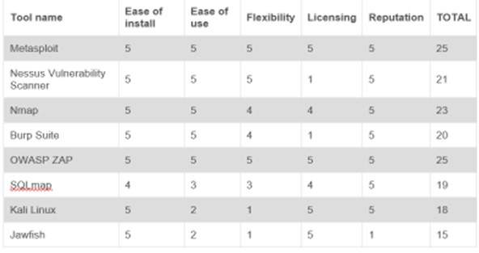
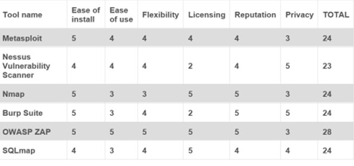

Unit 6

Unit 6 Overview
During unit 6, we evaluated network scanning and intrusion tools.
Summary Post: Scanning exercise
During week 3, we were asked to complete a scanning exercise on our assigned website, using the tools learned during the lecturecasts and seminar exercises. I used tracert, nslookup, ping and mx commands to carry out the scans. I also used multiple IP address location tools to locate the host country of the website.
As a team, we analysed the hops and any latency found. All members of the team had a different amount of hops from their machine to the allocated website. However, we discussed that this is because we are all based in different locations. The scan result that we disagreed on was the location of the website host. Similarly to other teams, I had initially used iplookup and found that the host was located in the USA (Kansas). However, this was disputed by another member of the group, who thought that the host was located in the Netherlands. We decided that this was most likely to be true when taking into account all the information we had analysed regarding the route of the hops.
Seminar 3 preparation
I read “Geer, D. (2015) 8 Penetration Testing Tools That Will Do the Job. (Network World)" and evaluated and rated each tool
Personal ratings
Team ratings
Team Design Document